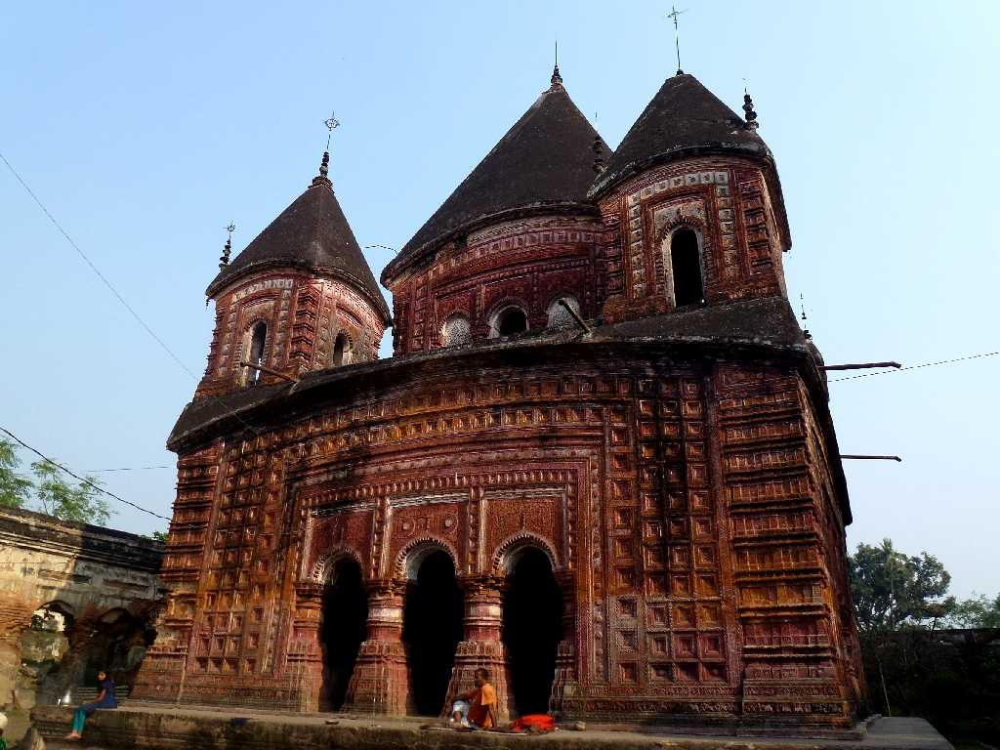
Pancha Ratna Bara Govinda Temple Puthia
１８世紀に創建された美しいテラコッタが壁面を覆う寺院群
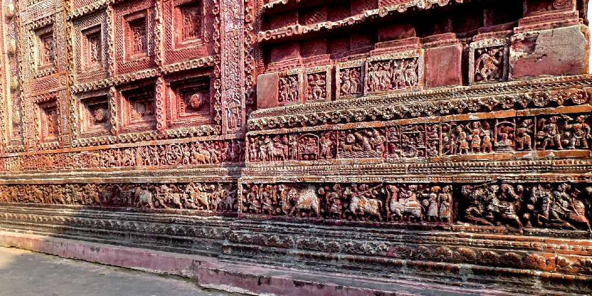
Terracotta Pancha Ratna Bara Govenda Temple
ラーマーヤナやラダとクリシュナ等を表しているテラコッタ
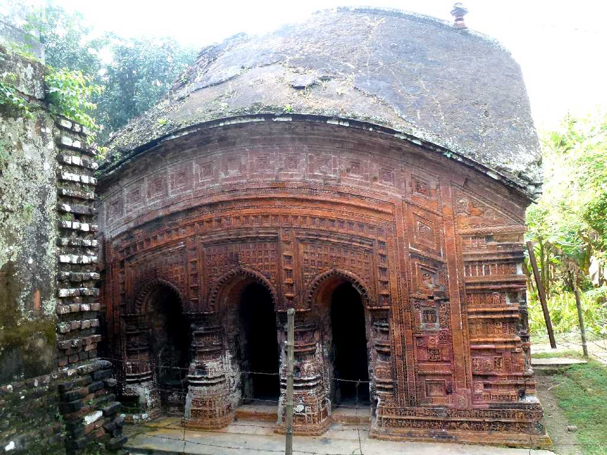
Do Chala Chhota Anhik Temple
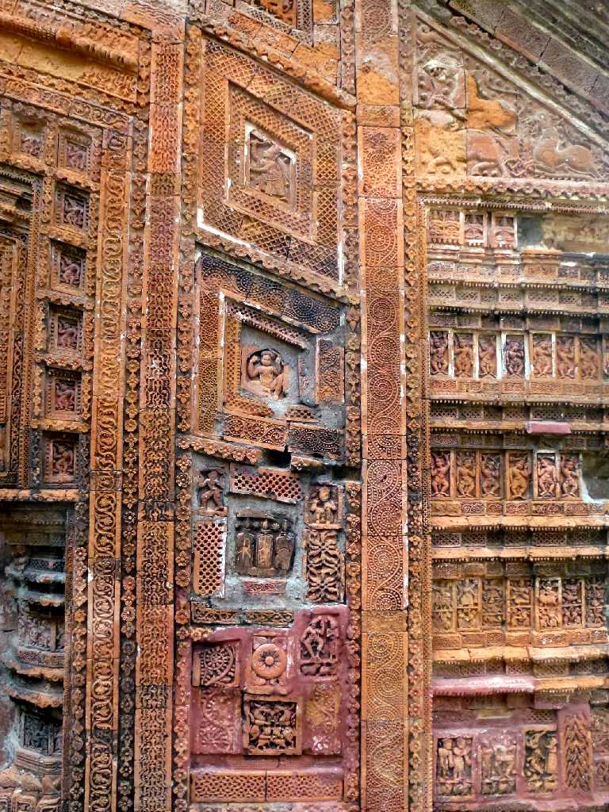
Terracotta Do Chala Chhota Anhik Temple
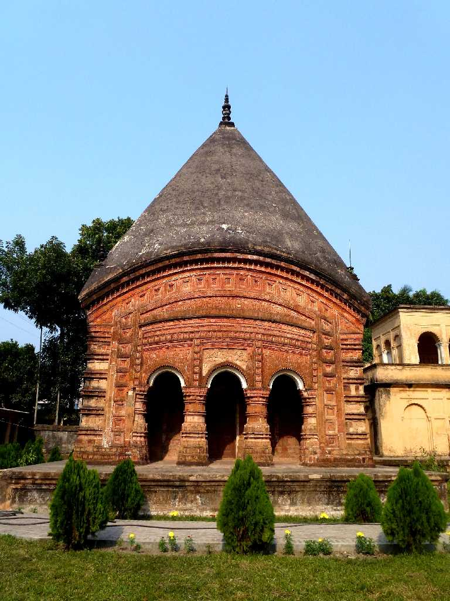
Chauchala Chhota Govinda Temple Puthia
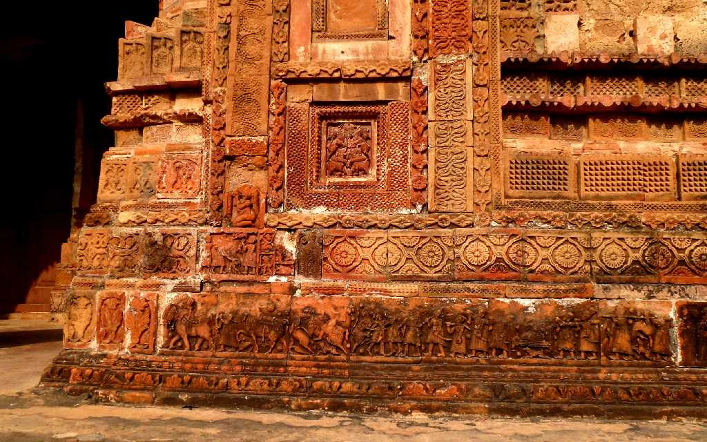
Terracotta Chauchala Chhota Govenda Temple
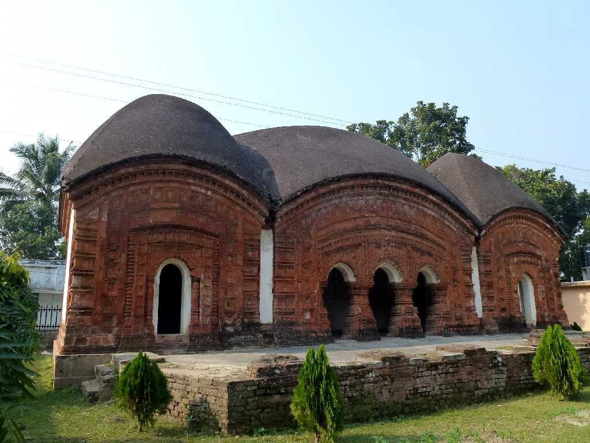
Bara Anhik Temple
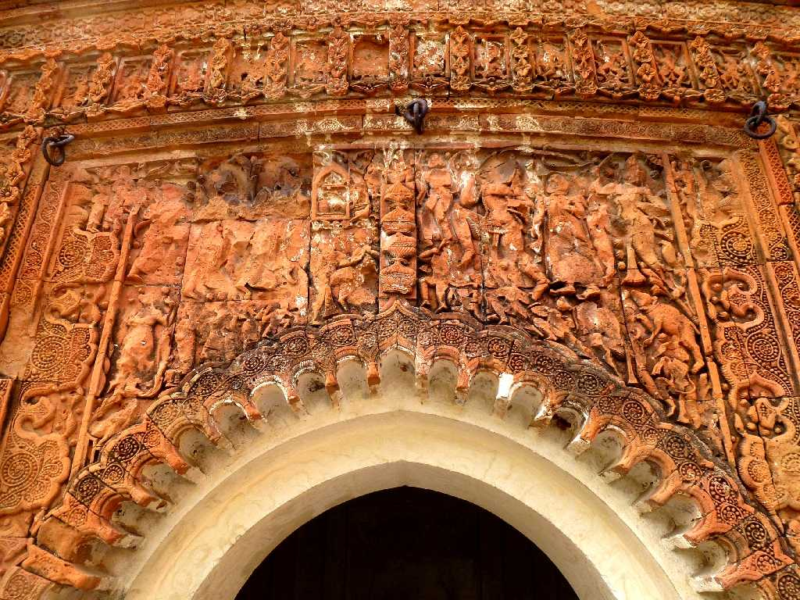
Terracotta Bala Anhik Temple
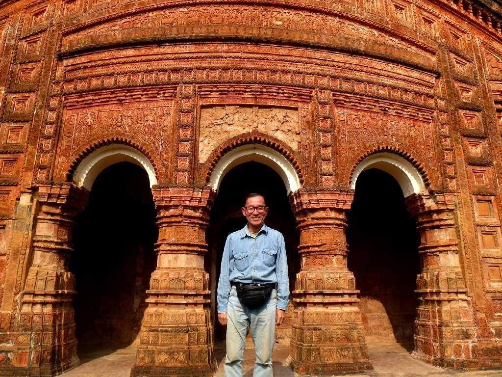
December 13 2013 Govinda Temple Puthia
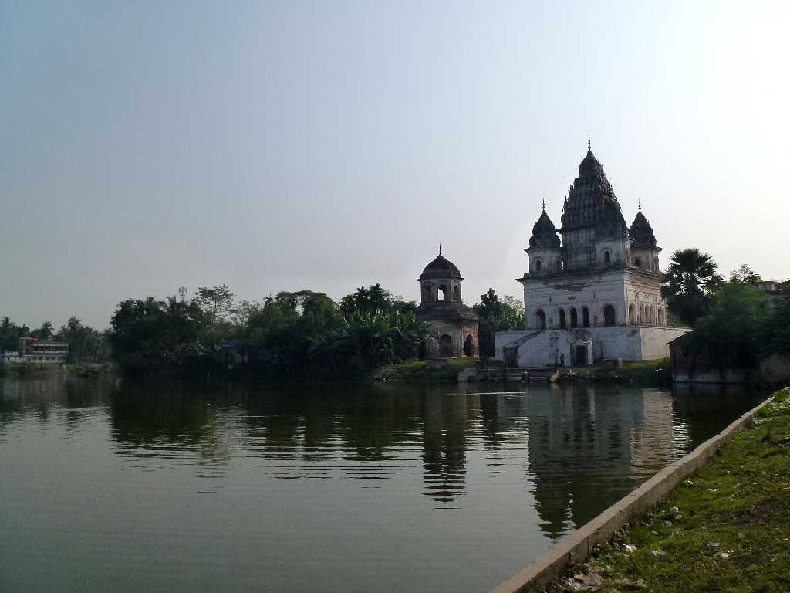
Shiva Temple
１８２３年プティア女王により創建されたバングラデシュで最も大きなシヴァ寺院
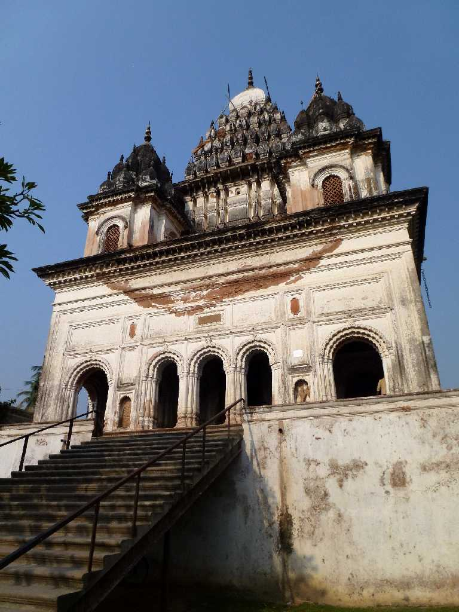 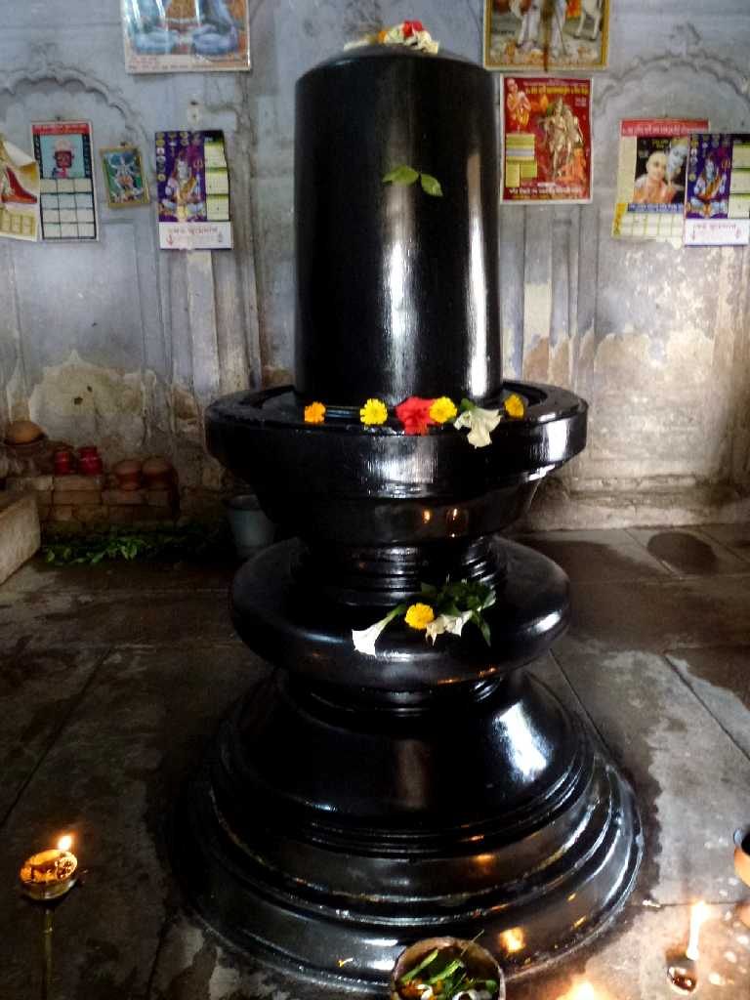
Shiva Temple Linga Shiva Temple